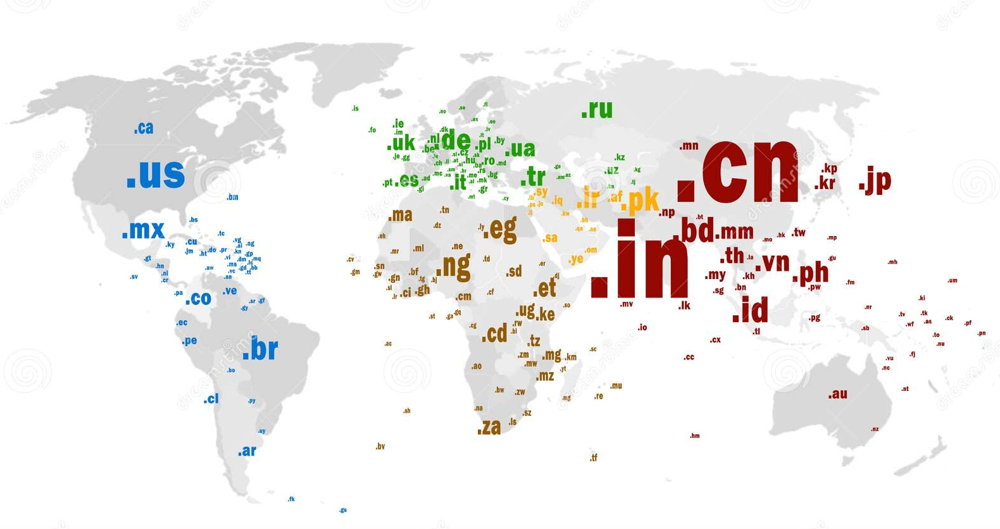

| Governança da Internet: o papel de ICANN, LACNIC, Nic.br e Registro.br | ||||
| Início | ICANN e Registro.br | LACNIC e nic.br | CcTLD e Relação NIC.br x Registro.br | Sobre nós |
Em inglês, Country Code Top Level Domain. Em português, ccTLD é a abreviação para Domínio Nacional de Nível Superior, extensão de domínio que “organiza e qualifica os sites na internet.” Esse domínio sempre será formado por duas letras (como o .br) e atribuído a um país/território específico.
A criação e manutenção dos domínios fica sob responsabilidade da IANA (Internet Assigned Numbers Authority) e a gestão geralmente fica sob responsabilidade de autoridades específicas em cada país.
Para que uma PF ou PJ tenha acesso a esse serviço, é preciso, sobretudo, se cadastrar no site da autoridade competente, fornecer seus dados (como CPF/CNPJ) e pagar a taxa de registro.

Embora o NIC.br e o Registro.br tenham funções diferentes, ambas as organizações fazem parte do mesmo grupo e estão diretamente conectadas. O NIC.br cuida da infraestrutura da internet no país de forma mais ampla, enquanto o Registro.br executa o registro de domínios ".br". O trabalho de uma complementa o da outra, com o NIC.br supervisionando e promovendo a estrutura digital, e o Registro.br garantindo que o processo de registro de domínios aconteça de maneira eficiente.